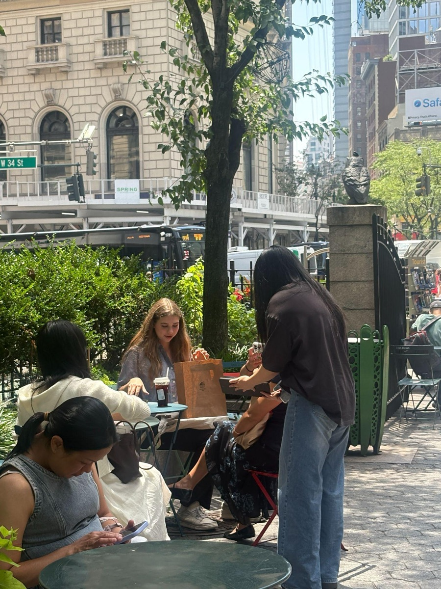
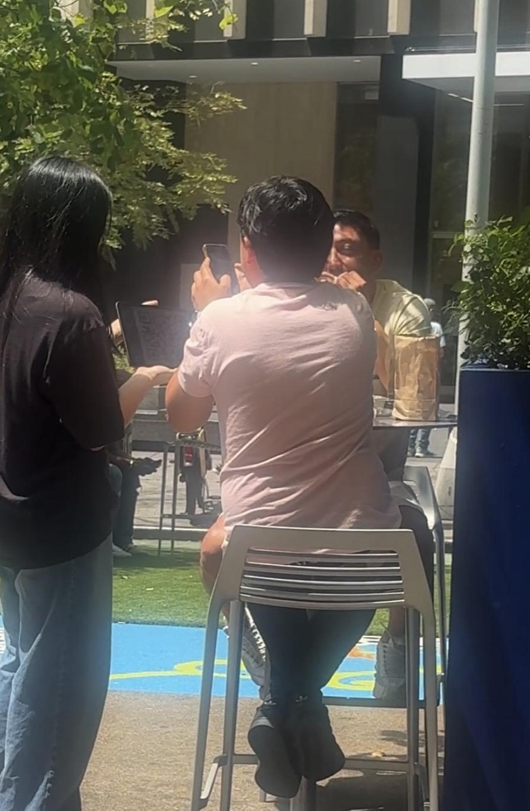

Over the past few weeks, the Glowify team has been going around New York City asking people to complete our anonymous Sun Safety & Skin Cancer Prevention Survey. We visited parks, public plazas, and other gathering spaces, inviting people to complete our survey and look through our mission. Our goal is to understand how people protect their skin, where they learn about sun safety, and what they still want to know.


As we began analyzing the responses from this week’s surveys, we saw trends emerge. One of the most interesting findings was that nearly 70% of respondents rated the importance of daily sun protection a 5 out of 5, while over 80% rated it a 4 or 5. It's pretty clear to see that many people recognize the importance of protecting their skin from the sun.
But when we looked at people's actual habits, only about 35% of respondents said they always apply sunscreen when spending time outdoors, while another 27% said they often do. That means nearly 4 in 10 people admitted they only wear sunscreen sometimes, rarely, or never. We understand that sunscreen is important, but busy schedules, cloudy weather, or simply just forgetting can make it easy to skip applying sunscreen.
When it came to other forms of sun protection, about 62% reported regularly using sunscreen, 52% wearing sunglasses, 33% wearing hats, 30% seeking shade, and 20% wearing protective clothing. These habits all help reduce UV exposure.
Personally for me, the most surprising result was how common sunburns were. Nearly three-quarters of respondents had experienced at least one sunburn, and about one in five reported being sunburned many times. Many people believe that sunburns disappear after a few days, but it is actually a sign that the skin has been damaged by UV radiation. Over time, continuous UV damage can increase the risk of premature skin aging and skin cancer.
We were also curious about where people learn about sun safety. Our survey results showed that around 40% of respondents said social media was their primary source of information, making it the most common answer by a wide margin. Family and friends were the next most common source, followed by schools and healthcare professionals. Social media has made health information more accessible than ever before, but it has also made it easier for myths and misinformation to spread. This is another problem we hope to reduce by sharing factual, evidence-based information that is also easy to understand.
Finally, we asked participants what they wanted to learn more about. The most requested topics were choosing the right sunscreen, recognizing the warning signs of skin cancer, understanding the UV Index, and debunking common sunscreen myths. Seeing these responses gave us a great outline for future Glowify blogs and educational resources.
As we are continuing on with our survey, every response helps us better understand how our community thinks about sun safety. Thank you to everyone who has participated in our survey so far. We are looking forward to sharing more insights as we continue collecting responses in our community!